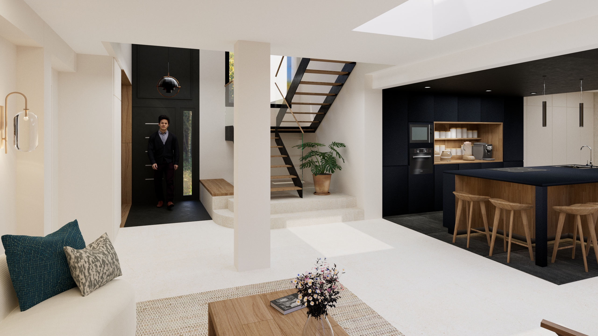
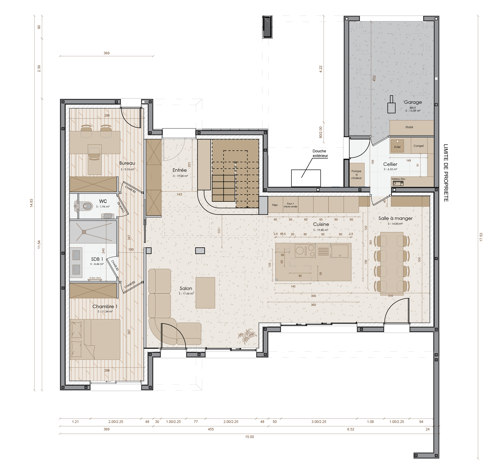
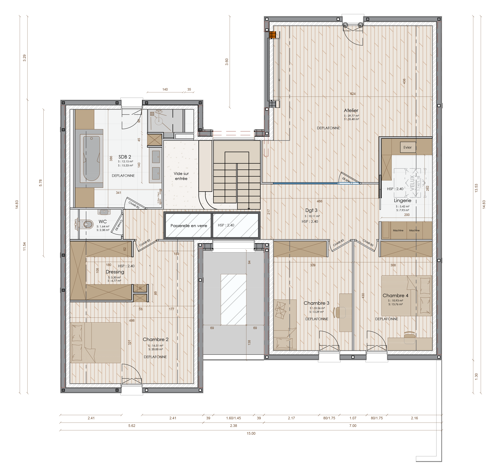

Redéfinir la manière dont les espaces, la lumière et les circulations interagissent a été au cœur de ce projet, dès les premières étapes. En parallèle du travail du constructeur sur les plans de sa maison, le client a fait appel à moi pour apporter un regard neuf et créatif, afin de créer une cohérence globale et une identité forte à son intérieur. Chaque élément a été pensé pour avoir une raison d’être et contribuer à l’harmonie générale.
L’escalier est devenu un élément central, repensé pour assumer la circulation verticale et relier visuellement les deux niveaux, tandis que la passerelle transparente à l’étage vient renforcer l’axe horizontal et l’articulation des espaces. Le socle en béton ciré de l’escalier émerge du sol et évolue vers une structure légère et aérienne, et le garde-corps en verre met en valeur cet axe vertical, transformant l’ensemble en un point fort du projet.
La cuisine occupe une place particulière pour le client, qui y passe beaucoup de temps et y voit un lieu de convivialité familiale. Elle a été conçue comme une coque enveloppante, englobant sol, mobilier et plafond, en gris anthracite, créant un contraste fort avec la clarté du reste de la pièce à vivre. Ce contraste joue sur le principe de clair/obscur, qui structure l’espace et met en valeur la cuisine comme cœur central de la maison.
À l’étage, chaque espace a été repensé pour correspondre aux usages de chacun, avec des teintes sobres et intemporelles. Le couloir, traité comme une pièce à part entière, reprend le principe de clair/obscur grâce à ses murs et plafonds bleu profond et à un éclairage vertical étudié, assurant la continuité esthétique de la maison. Chaque choix, du mobilier aux matériaux, a été réfléchi pour allier fonctionnalité, confort et identité. L’ensemble du projet transforme la maison en un lieu cohérent et harmonieux, où lumière, volumes et matériaux racontent l’histoire de ses occupants.
Chaque choix, du mobilier aux matériaux, a été réfléchi pour allier fonctionnalité, confort et identité. L’ensemble du projet transforme la maison en un lieu cohérent et harmonieux, où lumière, volumes et matériaux racontent l’histoire de ses occupants.

